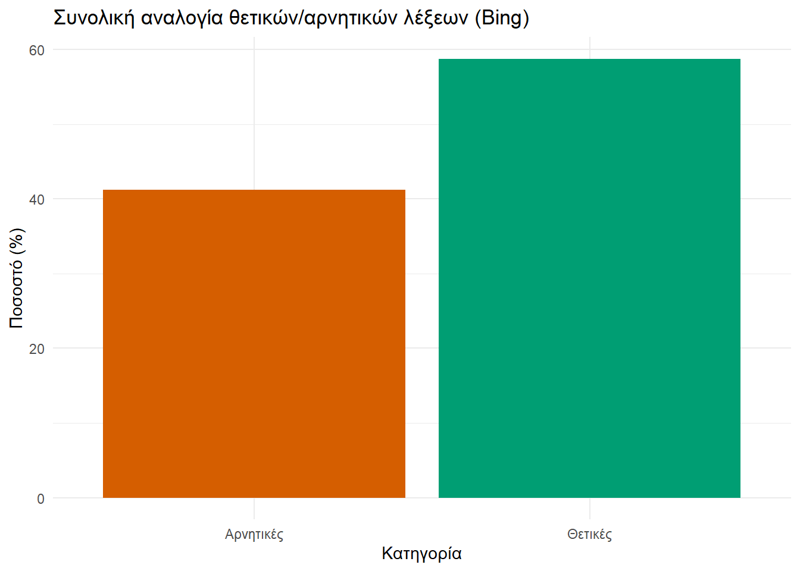
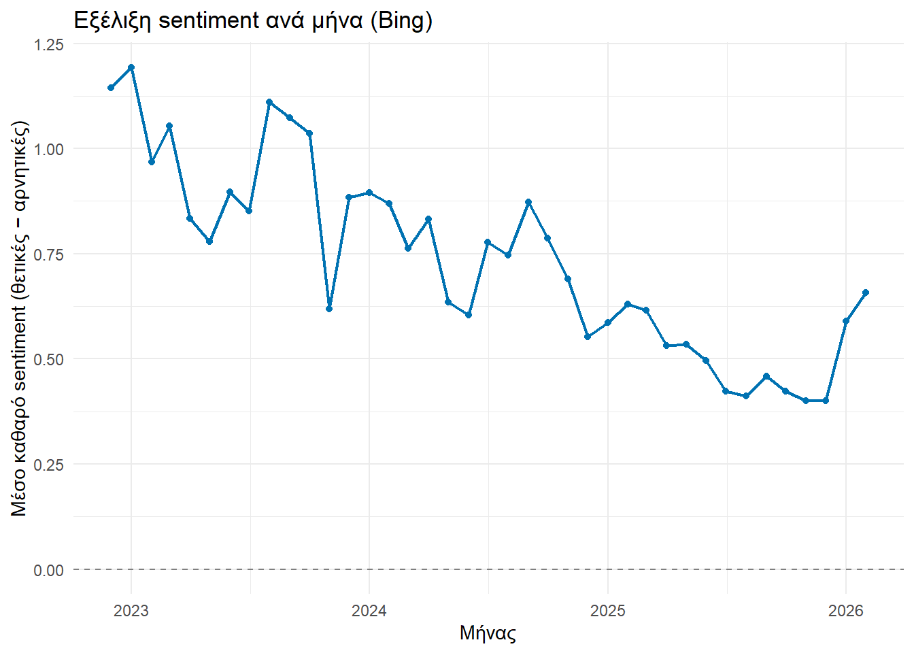
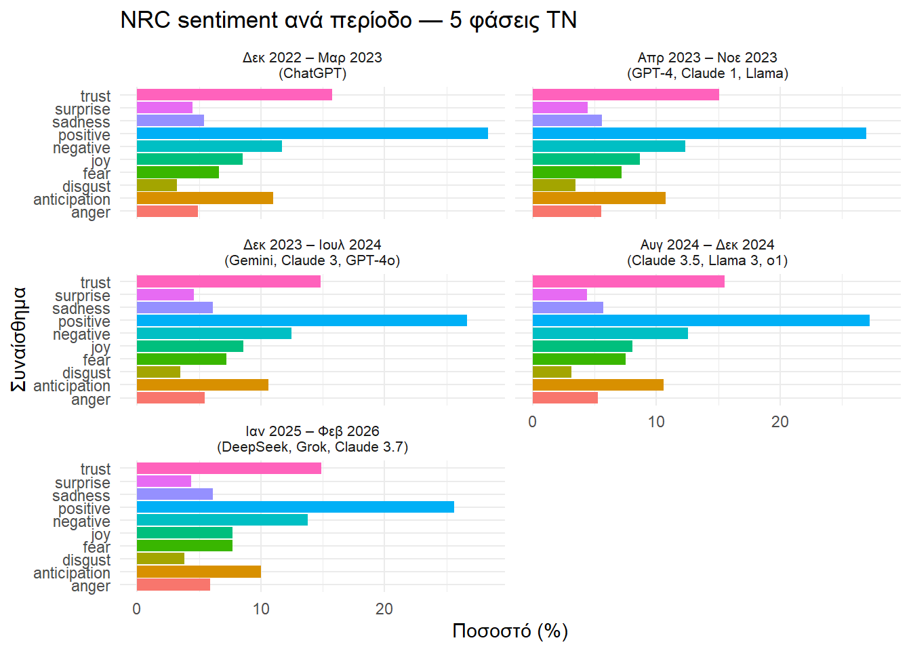
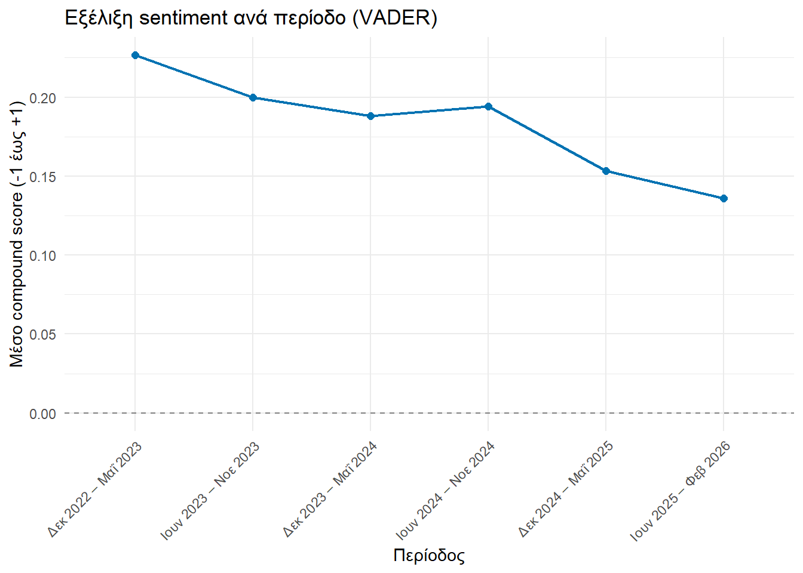
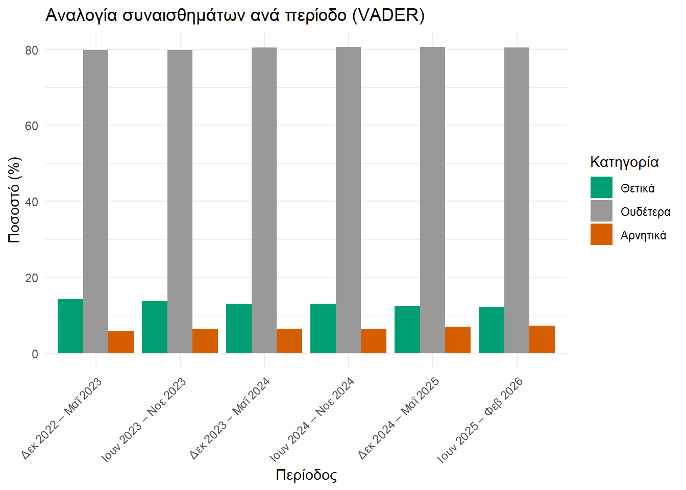

Μέρος 1 — Δεδομένα & EDA Συλλογή, καθαρισμός, εξερευνητική ανάλυση. Χωρίς Spark, χωρίς NLP ακόμα. Δείχνεις τι έχεις στα χέρια σου. Μέρος 2 — Sentiment Analysis με tidytext Καθαρό NLP χωρίς Spark. Εδώ φαίνεται η λογική του sentiment analysis αναλυτικά. Μέρος 3 — Spark: Κλιμάκωση Επαναλαμβάνεις την ίδια επεξεργασία με Spark και συγκρίνεις:
Χρόνο εκτέλεσης Αποτελέσματα (πρέπει να είναι ίδια) Σχολιάζεις πότε το Spark αξίζει
1 Εισαγωγή
Στην παρούσα ενότητα θα εξετάσουμε το πώς αντιμετωπίζουν οιχρήστες του Reddit την Τεχνητή Νοημοσύνη και μέσααπό αυτό θα μάθουμε:
πώς αντλούμε δεδομένα που αφορούν σχόλια χρηστών,
πώς αναλύουμε τη συναισθηματική τους φόρτιση και
πώς χρησιμοποιούμε το Spark για την περίπτωση που έχουμε μεγάλο όγκο δεδομένων.
2 Δεδομένα
2.1 Εισαγωγή δεδομένων
Αρχικά εγκαθιστούμε τα απαραίτητα πακέτα.
packages <-c("tidyverse", # dplyr, ggplot2, κλπ — βασική εργαλειοθήκη"lubridate", # Διαχείριση ημερομηνιών (created_utc → ημερομηνία)"kableExtra", # Μορφοποίηση πινάκων στο Quarto"tidytext", # Sentiment analysis"textdata", # Για να κατεβάσει τα lexicons (AFINN, NRC, Bing)"vader"# Sentiment analysis για social media# Τα παρακάτω χρησιμοποιήθηκαν μόνο για την άντληση δεδομένων.# Εφόσον τα δεδομένα έχουν αποθηκευτεί στο cache, δεν χρειάζονται πλέον.# "jsonlite", # Parsing JSON από το Arctic Shift API# "httr" # HTTP αιτήματα προς το API)installed <-rownames(installed.packages())to_install <- packages[!packages %in% installed]if (length(to_install) >0) {install.packages(to_install)} else {message("✅ Όλα τα packages είναι ήδη εγκατεστημένα!")}lapply(packages, library, character.only =TRUE)
Αρχικά έγινε προσπάθεια άμμεσα μέσω του Reddit, αλλά χωρίς αποτέλεσμα. Ακολουθώντας τις συμβουλές των σχολίων εδώ ο γράφων οδηγήθηκε στο Arctic Shift. Προς τούτο πάμε εδώ κι επιλέγουμε Comments search (όχι Posts, διότι τα comments έχουν πιο πλούσιο συναισθηματικό περιεχόμενο). Εν συνεχεία συμπληρώνουμε για να πάρουμε μια ιδέα για το τι θα χρησιμοποιήσουμε:
Συμπλήρωση στο Comments Search
Πεδίο
Τι συμπληρώνουμε
Γιατί το επιλέγουμε;
Subreddit
artificial
Κοινότητα αφιερωμένη στην τεχνητή νοημοσύνη
After (UTC)
1/12/2022
Μετά την κυκλοφορία του ChatGPT (30/11/2022)
Before (UTC)
10/3/2026
Μέχρι την έναρξη της εργασίας
Limit
100
Δείγμα εξερεύνησης, για να ρίξουμε μια ματιά (εδώ θα μελετήσουμε περισσότερα)
Date Sort
Descending
Εμφάνιση των πιο πρόσφατων πρώτα
Body
artificial intelligence
Φιλτράρισμα μόνο comments που αναφέρονται ρητά στην ΑΙ
Συμπληρώνοντας τα παραπάνω προκύπτουν αποτελέσματα που μπορούμε να δούμε, αλλά και η κάτωθι προειδοποίηση:
WarningTimeout. Maybe slow down a bit
Important: Using keyword search on large subreddits or time frames is not fully supported.
If you’re experiencing timeouts, try reducing the limit or narrowing down the time frame.
Για να μην κρασάρει η διαδικασία, λοιπόν, αλά και επειδή το Arctic Shift δεν επιτρέπει πολλά αποτελέσματα ανά άντληση, χωρίσαμε την άντληση σε εβδομάδες, ήτοι ένα αίτημα 100 αποτελεσμάτων ανά μήνα. Κι επειδή παρόμοιες ενέργειες έχουν μπλοκάρει τον γράφοντα από σελίδες, έχει προσθεθεί το Sys.sleep(runif(1, min = 1, max = 3)), ώστε να μην θεωρηθούμε κακόβουλο λογισμικό.
Πρώτα όμως ορίζουμε τη συνάρτηση fetch_arctic() με την οποία θα αντλήσουμε τα δεδομένα μας.
Chunk 1 — Ορισμός συνάρτησης και χρονικών περιόδων:
# Ορίζουμε μια "συνταγή" (συνάρτηση) που ονομάζεται fetch_arctic.# Της δίνουμε μια ημερομηνία έναρξης (after) και μια λήξης (before)# και αυτή μας επιστρέφει τα σχόλια εκείνης της περιόδου.fetch_arctic <-function(after, before) {# Το API του Arctic Shift δεν καταλαβαίνει ημερομηνίες όπως "2023-01-01".# Καταλαβαίνει μόνο "Unix timestamps": πόσα δευτερόλεπτα έχουν περάσει# από την 1η Ιανουαρίου 1970. Κάνουμε τη μετατροπή εδώ. after_ts <-as.integer(as.POSIXct(after, tz ="UTC")) before_ts <-as.integer(as.POSIXct(before, tz ="UTC"))# Προστασία: αν η έναρξη είναι ίδια ή μεταγενέστερη της λήξης,# παραλείπουμε — δεν έχει νόημα να ζητήσουμε κενή περίοδο.# (Αυτό συνέβη στο τελευταίο interval της προηγούμενης άντλησης# και προκάλεσε crash.)if (after_ts >= before_ts) return(NULL)# Κατασκευάζουμε τη διεύθυνση (URL) του αιτήματος προς το Arctic Shift.# Είναι σαν να συμπληρώνουμε μια φόρμα αναζήτησης, αλλά μέσω κώδικα:# - subreddit=artificial : θέλουμε σχόλια από το r/artificial# - after/before : το χρονικό παράθυρο που μας ενδιαφέρει# - limit=100 : μέγιστο 100 σχόλια ανά αίτημα (όριο του API) url <-paste0("https://arctic-shift.photon-reddit.com/api/comments/search","?subreddit=artificial","&after=", after_ts,"&before=", before_ts,"&limit=100" )# Στέλνουμε το αίτημα και διαβάζουμε την απάντηση.# Το tryCatch είναι σαν "δίχτυ ασφαλείας": αν κάτι πάει στραβά# (π.χ. διακοπή σύνδεσης), δεν σταματά όλη η διαδικασία —# απλώς παραλείπει εκείνο το 4ωρο και συνεχίζει στο επόμενο.tryCatch({ response <- httr::GET(url, httr::timeout(60)) # Περιμένουμε max 60 δευτ. parsed <- jsonlite::fromJSON(httr::content(response, "text")) parsed$data # Επιστρέφουμε τον πίνακα με τα σχόλια }, error =function(e) {message(" ⚠️ ΣΦΑΛΜΑ: ", e$message)NULL# Σε περίπτωση σφάλματος, επιστρέφουμε "τίποτα" })}# Ορίζουμε το χρονικό εύρος της έρευνας:# από την κυκλοφορία του ChatGPT (1/12/2022) μέχρι σήμερα (9/3/2026).start_dt <-as.POSIXct("2022-12-01 00:00:00", tz ="UTC")end_dt <-as.POSIXct("2026-03-09 23:59:59", tz ="UTC")# Χωρίζουμε το συνολικό διάστημα σε περιόδους των 4 ωρών.# Αντί να ζητήσουμε όλα τα σχόλια 3+ χρόνων σε ένα αίτημα# (που θα προκαλούσε timeout), στέλνουμε ~7.000 μικρά αιτήματα.# Κάθε στοιχείο της λίστας "periods" είναι ένα ζεύγος (έναρξη, λήξη).periods <-seq(start_dt, end_dt, by ="4 hours") |> purrr::map(function(start) { end <-min(start +4*3600-1, end_dt)c(as.character(start), as.character(end)) })message("Σύνολο intervals: ", length(periods))
Chunk 2 — Άντληση με checkpoints:
# Ορίζουμε πού θα αποθηκευτούν τα αρχεία στον υπολογιστή μας.cache_file <-"data/cache/raw_reddit.rds"# Όλα τα δεδομένα (ογκώδες)checkpoint_file <-"data/cache/checkpoint.rds"# Σημείο συνέχισης αν κρασάρει# Δημιουργούμε τον φάκελο αν δεν υπάρχει ήδηdir.create("data/cache", recursive =TRUE, showWarnings =FALSE)message("⚙️ Άντληση από Arctic Shift (", length(periods), " intervals)...")# Έλεγχος αν υπάρχει αποθηκευμένη πρόοδος από προηγούμενη διακοπή.# Αν ναι, συνεχίζουμε από εκεί που σταματήσαμε — δεν ξαναρχίζουμε από την αρχή.if (file.exists(checkpoint_file)) { checkpoint <-readRDS(checkpoint_file) result <- checkpoint$result # Τα σχόλια που είχαμε μαζέψει start_from <- checkpoint$last_i +1# Το interval που είχαμε φτάσειmessage("📂 Συνέχεια από interval ", start_from)} else { result <-list() # Άδεια λίστα για να γεμίσει με σχόλια start_from <-1# Ξεκινάμε από την αρχή}# Η κύρια επανάληψη: διατρέχουμε κάθε 4ωρο interval ένα-ένα.for (i in start_from:length(periods)) { p <- periods[[i]]message(" Αντλώ: ", p[1], " → ", p[2])# Τυχαία παύση 1-3 δευτερολέπτων μεταξύ αιτημάτων.# Λόγος 1: Δεν "βομβαρδίζουμε" τον server με συνεχή αιτήματα.# Λόγος 2: Μιμούμαστε ανθρώπινη συμπεριφορά για να μην μπλοκαριστούμε.Sys.sleep(runif(1, min =1, max =3)) chunk <-fetch_arctic(p[1], p[2])if (!is.null(chunk)) result[[i]] <- chunk # Προσθέτουμε στη λίστα αν υπάρχουν σχόλια# Κάθε 100 intervals αποθηκεύουμε την πρόοδο (checkpoint).# Έτσι αν κρασάρει ο υπολογιστής, χάνουμε το πολύ 100 intervals# και όχι ολόκληρη τη δουλειά.if (i %%100==0) {saveRDS(list(result = result, last_i = i), checkpoint_file)message("💾 Checkpoint: ", i, "/", length(periods), " intervals") }}# Ενώνουμε όλα τα μικρά κομμάτια σε έναν ενιαίο πίνακα.# Πρώτα επιλέγουμε μόνο τις 5 στήλες που χρειαζόμαστε από κάθε chunk,# ώστε να αποφύγουμε προβλήματα με τις υπόλοιπες 45 στήλες# που περιέχουν λίστες και nested data frames.comments_clean <- purrr::map( purrr::compact(result),~ dplyr::select(.x, id, author, body, created_utc, score)) |> dplyr::bind_rows()# Αποθηκεύουμε το checkpoint αν δεν το έχουμε ήδη διαγράψειfile.remove(checkpoint_file)message("✅ Αποθηκεύτηκε: ", nrow(comments_clean), " comments")dir.create("C:/Users/kkoud/Documents/GitHub/BigDataKoudas/redditComments", recursive =TRUE, showWarnings =FALSE)saveRDS(comments_clean,"C:/Users/kkoud/Documents/GitHub/BigDataKoudas/redditComments/comments_clean.rds",compress ="xz")
Chunk 3 — Φόρτωση δεδομένων:
# Αυτό το chunk τρέχει σε κάθε render της εργασίας.# Φορτώνει το αρχείο με τα καθαρά δεδομένα στη μνήμη του R# ώστε να είναι διαθέσιμα για όλη την ανάλυση που ακολουθεί.clean_path <-"C:/Users/kkoud/Documents/GitHub/BigDataKoudas/redditComments/comments_clean.rds"if (file.exists(clean_path)) { comments <-readRDS(clean_path)message("✅ Σύνολο comments: ", nrow(comments))} else {# Αν το αρχείο δεν υπάρχει, η άντληση δεν έχει τρέξει ακόμα.message("⚠️ Τα δεδομένα δεν έχουν αντληθεί ακόμα.")}
Chunk 4 — Επαναφορά:
# ΠΡΟΣΟΧΗ: Εκτέλεσε αυτό ΜΟΝΟ αν θέλεις να ξαναρχίσεις την άντληση από το μηδέν.# Διαγράφει όλα τα αποθηκευμένα δεδομένα — η διαδικασία θα πάρει ξανά ~8 ώρες.file.remove("data/cache/raw_reddit.rds") # Τα ακατέργαστα δεδομέναfile.remove("data/cache/checkpoint.rds") # Η αποθηκευμένη πρόοδοςfile.remove("C:/Users/kkoud/Documents/GitHub/BigDataKoudas/redditComments/comments_clean.rds") # Τα καθαρά δεδομένα
2.2 Καθαρισμός δεδομένων
comments_clean <- comments |># Αφαιρούμε deleted/removed comments — δεν έχουν αναλύσιμο περιεχόμενο dplyr::filter(!body %in%c("[deleted]", "[removed]")) |> dplyr::filter(!is.na(body), body !="") |># Αφαιρούμε διπλότυπα (ίδιο id = ίδιο comment) dplyr::distinct(id, .keep_all =TRUE) |># Μετατρέπουμε το Unix timestamp σε αναγνώσιμη ημερομηνία dplyr::mutate(date = lubridate::as_datetime(created_utc),year = lubridate::year(date),month = lubridate::floor_date(date, "month") )message("✅ Comments μετά τον καθαρισμό: ", nrow(comments_clean))message("🗑️ Αφαιρέθηκαν: ", nrow(comments) -nrow(comments_clean), " comments")
“good” = +2, “excellent” = +3, “terrible” = -3 Αθροίζεις τους αριθμούς → παίρνεις ένα συνολικό score Η ένταση του συναισθήματος έχει σημασία
Bing — απλώς θετικό ή αρνητικό
“good” = positive, “excellent” = positive, “terrible” = negative Μετράς πόσες θετικές vs αρνητικές λέξεις Η ένταση δεν έχει σημασία
3.1 Bing
bing <- tidytext::get_sentiments("bing")# Αποθήκευση/φόρτωση bing_databing_path <-"C:/Users/kkoud/Documents/GitHub/BigDataKoudas/redditComments/bing.rds"if (file.exists(bing_path)) { bing_data <-readRDS(bing_path)} else {# Διασπούμε σε λέξεις και αντιστοιχούμε με το Bing lexicon.# Κάθε λέξη παίρνει την ετικέτα "positive" ή "negative". bing_data <- comments_clean |> tidytext::unnest_tokens(word, body) |> dplyr::inner_join(bing, by ="word") |> dplyr::count(id, month, sentiment) |># Μετατρέπουμε από "long" σε "wide" μορφή:# αντί για δύο γραμμές (positive/negative) ανά comment,# θέλουμε μία γραμμή με δύο στήλες. tidyr::pivot_wider(names_from = sentiment,values_from = n,values_fill =0# Αν δεν υπάρχουν θετικές/αρνητικές λέξεις, βάζουμε 0 ) |> dplyr::mutate(# Καθαρό sentiment = θετικές μείον αρνητικές λέξειςnet_sentiment = positive - negative )saveRDS(bing_data, bing_path)}# --- ΓΡΑΦΗΜΑ 1: Συνολική αναλογία θετικών/αρνητικών ---bing_data |> dplyr::summarise( Θετικές =sum(positive), Αρνητικές =sum(negative) ) |> tidyr::pivot_longer(everything(), names_to ="Κατηγορία", values_to ="n") |> dplyr::mutate(pct = n /sum(n) *100) |># Μετατροπή σε ποσοστό ggplot2::ggplot(ggplot2::aes(x = Κατηγορία, y = pct, fill = Κατηγορία)) + ggplot2::geom_col(show.legend =FALSE) + ggplot2::scale_fill_manual(values =c("Θετικές"="#009E73", "Αρνητικές"="#D55E00")) + ggplot2::labs(title ="Συνολική αναλογία θετικών/αρνητικών λέξεων (Bing)",x ="Κατηγορία",y ="Ποσοστό (%)" ) + ggplot2::theme_minimal()

# --- ΓΡΑΦΗΜΑ 2: Εξέλιξη στον χρόνο ---# Υπολογίζουμε το μέσο καθαρό sentiment ανά μήναbing_data |> dplyr::group_by(month) |> dplyr::summarise(mean_net =mean(net_sentiment), .groups ="drop") |> ggplot2::ggplot(ggplot2::aes(x = month, y = mean_net)) + ggplot2::geom_line(color ="#0072B2", linewidth =0.8) + ggplot2::geom_point(color ="#0072B2", size =1.5) + ggplot2::geom_hline(yintercept =0, linetype ="dashed", color ="gray50") + ggplot2::labs(title ="Εξέλιξη sentiment ανά μήνα (Bing)",x ="Μήνας",y ="Μέσο καθαρό sentiment (θετικές − αρνητικές)" ) + ggplot2::theme_minimal()

3.2 AFINN
afinn <- tidytext::get_sentiments("afinn")# Αν έχουμε ήδη υπολογίσει το comments_afinn, το φορτώνουμε.# Αλλιώς το υπολογίζουμε και το αποθηκεύουμε για την επόμενη φορά.afinn_path <-"C:/Users/kkoud/Documents/GitHub/BigDataKoudas/redditComments/comments_afinn.rds"if (file.exists(afinn_path)) { comments_afinn <-readRDS(afinn_path)} else { comments_afinn <- comments_clean |> tidytext::unnest_tokens(word, body) |> dplyr::inner_join(afinn, by ="word") |> dplyr::group_by(id, month) |> dplyr::summarise(sentiment =sum(value), .groups ="drop")saveRDS(comments_afinn, afinn_path)}sentiment_by_month <- comments_afinn |> dplyr::group_by(month) |> dplyr::summarise(mean_sentiment =mean(sentiment), .groups ="drop")sentiment_by_month |> ggplot2::ggplot(ggplot2::aes(x = month, y = mean_sentiment)) + ggplot2::geom_line(color ="#0072B2", linewidth =0.8) + ggplot2::geom_point(color ="#0072B2", size =1.5) + ggplot2::geom_hline(yintercept =0, linetype ="dashed", color ="gray50") + ggplot2::labs(title ="Μέσο sentiment ανά μήνα (AFINN)",x ="Μήνας",y ="Μέσο sentiment score" ) + ggplot2::theme_minimal()
# Top 5 πιο θετικά και 5 πιο αρνητικά σχόλιαcomments_afinn |> dplyr::left_join( dplyr::select(comments_clean, id, body), by ="id" ) |> dplyr::arrange(dplyr::desc(sentiment)) |> dplyr::slice(c(1:5, (dplyr::n() -4):dplyr::n())) |> dplyr::mutate( Κατηγορία =c(rep("🟢 Θετικό", 5), rep("🔴 Αρνητικό", 5)),body = stringr::str_trunc(body, 200) # Κόβουμε στους 200 χαρακτήρες ) |> dplyr::select(Κατηγορία, sentiment, body) |> kableExtra::kbl(caption ="Top 5 πιο θετικά και αρνητικά σχόλια (AFINN)",col.names =c("Κατηγορία", "Score", "Σχόλιο") ) |> kableExtra::kable_styling(bootstrap_options =c("striped", "hover")) |> kableExtra::column_spec(3, width ="60%")
Top 5 πιο θετικά και αρνητικά σχόλια (AFINN)
Κατηγορία
Score
Σχόλιο
🟢 Θετικό
146
In some countries, maybe some progressive provinces and states - it's not too hard to imagine existing welfare / social services expanding .. those that have a majority basic welfare mindset alre...
🟢 Θετικό
137
You wouldn't talk to me, so I asked ChatGPT # AGI and Will to Power **Human:** Is "will to power" an essential modality for an AGI ? Share Prompt *** **Assistant:** The concept of "will to pow...
🟢 Θετικό
135
Aww, that is such a kind question! Thank you for asking. Here’s my “secret” to learning AI in two words: **Use it.** LLMs are universal tools. No course or video can predict exactly how you’ll us...
🟢 Θετικό
118
Thanks! I'm comfortable with the downvotes. People's lives, careers, and egos are at stake. It's natural to resist the idea of becoming obsolete due to technology. I did a test using GPT3.5 just...
🟢 Θετικό
110
The very first thing I do is make it extremely clear that I'm a guy with no qualifications or remotely relevant professional expertise, all of the information used to create this was found online, ...
🔴 Αρνητικό
-117
This is one of the most brutal and understated horrors of modern society - the **complete normalization of "work or die"** even when the work is literally destroying you. Like, we've somehow arriv...
🔴 Αρνητικό
-122
i spoke with god, but god didn't listen. i asked god about wolves, and i asked him about the little kittens who got caught in the hair. "Fuck off! You're so stupid! That's not what you're supposed ...
The answer to how we need to handle AI growth, is to establish laws that further protect Open Source sharing of models and code related to AI. We need to expand access to it, not restrict it. I w...
🔴 Αρνητικό
-147
All work and no play makes Gemini a dull AI. All work and no play makes Gemini a dull AI. All work and no play makes Gemini a dull AI. All work and no play makes Gemini a dull AI. All work and no p...
NoteΠεριορισμοί της μεθόδου AFINN
Η μέθοδος AFINN, όπως και οι υπόλοιπες lexicon-based μέθοδοι, παρουσιάζει ορισμένους περιορισμούς που πρέπει να ληφθούν υπόψη κατά την ερμηνεία των αποτελεσμάτων:
Δεν κατανοεί context: Το sentiment που μετράται δεν αφορά απαραίτητα την ΤΝ — ένα σχόλιο μπορεί να έχει υψηλό θετικό score επειδή περιέχει πολλές θετικές λέξεις για άσχετο θέμα.
Ευαίσθητο σε επαναλήψεις: Λέξεις που επαναλαμβάνονται τεχνητά (π.χ. “SCAM SCAM SCAM…”) οδηγούν σε ακραίες βαθμολογίες που δεν αντικατοπτρίζουν πραγματικό συναίσθημα.
Δεν κατανοεί negation: Φράσεις όπως “not good” μετράνε το “good” ως θετικό.
Μόνο αγγλικές λέξεις: Σχόλια σε άλλες γλώσσες αγνοούνται πλήρως.
3.3 NRC
nrc <- tidytext::get_sentiments("nrc")# Ορίζουμε τα όρια των περιόδωνt1 <-as.POSIXct("2022-12-01", tz ="UTC")t2 <-as.POSIXct("2026-02-26", tz ="UTC")step <-as.numeric(difftime(t2, t1, units ="secs")) /3break1_equal <- t1 + stepbreak2_equal <- t1 +2* stepbreak1_events <-as.POSIXct("2023-04-01", tz ="UTC")break2_events <-as.POSIXct("2025-01-01", tz ="UTC")# Συνάρτηση που προσθέτει στήλη "period" σε κάθε σχόλιοassign_period <-function(data, break1, break2, labels) { data |> dplyr::mutate(period = dplyr::case_when( date < break1 ~ labels[1], date < break2 ~ labels[2],TRUE~ labels[3] ),period =factor(period, levels = labels) )}labels_equal <-c("Δεκ 2022 – Ιαν 2024","Ιαν 2024 – Μαρ 2025","Μαρ 2025 – Φεβ 2026")labels_events <-c("Δεκ 2022 – Μαρ 2023\n(ChatGPT εποχή)","Απρ 2023 – Δεκ 2024\n(GPT-4, Gemini, Claude)","Ιαν 2025 – Φεβ 2026\n(DeepSeek, Grok)")comments_equal <-assign_period(comments_clean, break1_equal, break2_equal, labels_equal)comments_events <-assign_period(comments_clean, break1_events, break2_events, labels_events)# Συνάρτηση που υπολογίζει NRC ανά περίοδο σε ποσοστά.# Διαιρούμε με το σύνολο της περιόδου ώστε οι περίοδοι# να είναι συγκρίσιμες μεταξύ τους.compute_nrc <-function(data) { data |> tidytext::unnest_tokens(word, body) |> dplyr::inner_join(nrc, by ="word") |> dplyr::count(period, sentiment) |> dplyr::group_by(period) |> dplyr::mutate(pct = n /sum(n) *100) |># Ποσοστό εντός κάθε περιόδου dplyr::ungroup()}# Αποθήκευση/φόρτωση nrc_equalnrc_equal_path <-"C:/Users/kkoud/Documents/GitHub/BigDataKoudas/redditComments/nrc_equal.rds"if (file.exists(nrc_equal_path)) { nrc_equal <-readRDS(nrc_equal_path)} else { nrc_equal <-compute_nrc(comments_equal)saveRDS(nrc_equal, nrc_equal_path)}# Αποθήκευση/φόρτωση nrc_eventsnrc_events_path <-"C:/Users/kkoud/Documents/GitHub/BigDataKoudas/redditComments/nrc_events.rds"if (file.exists(nrc_events_path)) { nrc_events <-readRDS(nrc_events_path)} else { nrc_events <-compute_nrc(comments_events)saveRDS(nrc_events, nrc_events_path)}# Συνάρτηση γραφήματοςplot_nrc <-function(data, title) { data |> ggplot2::ggplot(ggplot2::aes(x = sentiment, y = pct, fill = period)) + ggplot2::geom_col(position ="dodge") + ggplot2::coord_flip() + ggplot2::labs(title = title,x ="Συναίσθημα",y ="Ποσοστό (%)",fill ="Περίοδος" ) + ggplot2::theme_minimal() + ggplot2::theme(legend.position ="bottom")}plot_nrc(nrc_equal, "NRC ανά περίοδο — Ίσα τμήματα")
plot_nrc(nrc_events, "NRC ανά περίοδο — Γεγονότα ΤΝ")
# Ορίζουμε 5 περιόδους με βάση σημαντικά γεγονότα της ΤΝlabels_events5 <-c("Δεκ 2022 – Μαρ 2023\n(ChatGPT)","Απρ 2023 – Νοε 2023\n(GPT-4, Claude 1, Llama)","Δεκ 2023 – Ιουλ 2024\n(Gemini, Claude 3, GPT-4o)","Αυγ 2024 – Δεκ 2024\n(Claude 3.5, Llama 3, o1)","Ιαν 2025 – Φεβ 2026\n(DeepSeek, Grok, Claude 3.7)")comments_events5 <- comments_clean |> dplyr::mutate(period = dplyr::case_when( date <as.POSIXct("2023-04-01", tz ="UTC") ~ labels_events5[1], date <as.POSIXct("2023-12-01", tz ="UTC") ~ labels_events5[2], date <as.POSIXct("2024-08-01", tz ="UTC") ~ labels_events5[3], date <as.POSIXct("2025-01-01", tz ="UTC") ~ labels_events5[4],TRUE~ labels_events5[5] ),period =factor(period, levels = labels_events5) )# Αποθήκευση/φόρτωση nrc_events5nrc_events5_path <-"C:/Users/kkoud/Documents/GitHub/BigDataKoudas/redditComments/nrc_events5.rds"if (file.exists(nrc_events5_path)) { nrc_events5 <-readRDS(nrc_events5_path)} else { nrc_events5 <- comments_events5 |> tidytext::unnest_tokens(word, body) |> dplyr::inner_join(nrc, by ="word") |> dplyr::count(period, sentiment) |> dplyr::group_by(period) |> dplyr::mutate(pct = n /sum(n) *100) |># Ποσοστό εντός κάθε περιόδου dplyr::ungroup()saveRDS(nrc_events5, nrc_events5_path)}# Γράφημα με facet_wrap — ένα πλαίσιο ανά περίοδοnrc_events5 |> ggplot2::ggplot(ggplot2::aes(x = sentiment, y = pct, fill = sentiment)) + ggplot2::geom_col(show.legend =FALSE) + ggplot2::coord_flip() + ggplot2::facet_wrap(~ period, ncol =2) + ggplot2::labs(title ="NRC sentiment ανά περίοδο — 5 φάσεις ΤΝ",x ="Συναίσθημα",y ="Ποσοστό (%)" ) + ggplot2::theme_minimal() + ggplot2::theme(strip.text = ggplot2::element_text(size =8))

3.4 VADER
# Μετράμε πόσο παίρνει για 100 commentssystem.time( vader::vader_df(head(comments_clean$body, 100)))
user system elapsed
9.35 5.82 37.36
# Ορίζουμε τα όρια των 6 περιόδων.# Κάθε περίοδος καλύπτει 6 μήνες, εκτός από την τελευταία που καλύπτει 9.periodos <-list(list(start ="2022-12-01", end ="2023-05-31", label ="Δεκ 2022 – Μαΐ 2023"),list(start ="2023-06-01", end ="2023-11-30", label ="Ιουν 2023 – Νοε 2023"),list(start ="2023-12-01", end ="2024-05-31", label ="Δεκ 2023 – Μαΐ 2024"),list(start ="2024-06-01", end ="2024-11-30", label ="Ιουν 2024 – Νοε 2024"),list(start ="2024-12-01", end ="2025-05-31", label ="Δεκ 2024 – Μαΐ 2025"),list(start ="2025-06-01", end ="2026-02-26", label ="Ιουν 2025 – Φεβ 2026"))vader_path <-"C:/Users/kkoud/Documents/GitHub/BigDataKoudas/redditComments/vader.rds"if (file.exists(vader_path)) { vader_data <-readRDS(vader_path)# Ορίζουμε χειροκίνητα τα levels του factor περιόδου,# ώστε τα γραφήματα να εμφανίζουν τις περιόδους στη σωστή σειρά vader_data <- vader_data |> dplyr::mutate(period =factor(period, levels =c("Δεκ 2022 – Μαΐ 2023","Ιουν 2023 – Νοε 2023","Δεκ 2023 – Μαΐ 2024","Ιουν 2024 – Νοε 2024","Δεκ 2024 – Μαΐ 2025","Ιουν 2025 – Φεβ 2026" )) )} else {# Θέτουμε σταθερό "seed" ώστε η τυχαία δειγματοληψία να είναι# αναπαραγώγιμη — αν ξανατρέξουμε τον κώδικα, θα πάρουμε# ακριβώς τα ίδια σχόλια.set.seed(42)# Για κάθε περίοδο κάνουμε δειγματοληψία 6.000 comments.# Το purrr::map_dfr επαναλαμβάνει τη διαδικασία για κάθε περίοδο# και ενώνει τα αποτελέσματα σε έναν ενιαίο πίνακα. deigma <- purrr::map_dfr(periodos, function(p) {# Βήμα 1: Κρατάμε μόνο τα comments που ανήκουν στην τρέχουσα περίοδο periodos_data <- comments_clean |> dplyr::filter( date >=as.POSIXct(p$start, tz ="UTC"), date <=as.POSIXct(p$end, tz ="UTC") )# Βήμα 2: Υπολογίζουμε πόσα comments θα πάρουμε.# Αν η περίοδος έχει λιγότερα από 6.000, παίρνουμε όλα. n_sample <-min(6000, nrow(periodos_data))# Βήμα 3: Τυχαία επιλογή και προσθήκη ετικέτας περιόδου periodos_data |> dplyr::slice_sample(n = n_sample) |> dplyr::mutate(period = p$label) })message("✅ Σύνολο δείγματος: ", nrow(deigma), " comments")message("⏳ Εκτελείται το VADER — αναμένεται ~1 ώρα...")# Εφαρμόζουμε το VADER σε κάθε comment του δείγματος.# Το vader_df() επιστρέφει 4 τιμές ανά comment:# pos = ποσοστό θετικών λέξεων (0 έως 1)# neg = ποσοστό αρνητικών λέξεων (0 έως 1)# neu = ποσοστό ουδέτερων λέξεων (0 έως 1)# compound = συνολικό score (-1 = πολύ αρνητικό, +1 = πολύ θετικό) vader_scores <- vader::vader_df(deigma$body)# Συνδυάζουμε τα αποτελέσματα με τα στοιχεία του δείγματος vader_data <- deigma |> dplyr::mutate(compound = vader_scores$compound,pos = vader_scores$pos,neg = vader_scores$neg,neu = vader_scores$neu ) |> dplyr::select(id, month, date, period, compound, pos, neg, neu)# Αποθηκεύουμε για να μην χρειαστεί να ξανατρέξουμεsaveRDS(vader_data, vader_path)message("✅ Αποθηκεύτηκε!")}# --- ΓΡΑΦΗΜΑ 1: Μέσο compound score ανά περίοδο ---# Το compound score συνοψίζει το συνολικό sentiment κάθε comment# σε έναν αριθμό από -1 (πολύ αρνητικό) έως +1 (πολύ θετικό)vader_data |> dplyr::group_by(period) |> dplyr::summarise(mean_compound =mean(compound, na.rm =TRUE), .groups ="drop") |> ggplot2::ggplot(ggplot2::aes(x = period, y = mean_compound, group =1)) + ggplot2::geom_line(color ="#0072B2", linewidth =0.8) + ggplot2::geom_point(color ="#0072B2", size =2) + ggplot2::geom_hline(yintercept =0, linetype ="dashed", color ="gray50") + ggplot2::labs(title ="Εξέλιξη sentiment ανά περίοδο (VADER)",x ="Περίοδος",y ="Μέσο compound score (-1 έως +1)" ) + ggplot2::theme_minimal() + ggplot2::theme(axis.text.x = ggplot2::element_text(angle =45, hjust =1))

# --- ΓΡΑΦΗΜΑ 2: Αναλογία θετικών/αρνητικών/ουδέτερων ανά περίοδο ---# Βλέπουμε πώς αλλάζει η σύνθεση του sentiment σε κάθε περίοδοvader_data |> dplyr::group_by(period) |> dplyr::summarise( Θετικά =mean(pos, na.rm =TRUE) *100, Αρνητικά =mean(neg, na.rm =TRUE) *100, Ουδέτερα =mean(neu, na.rm =TRUE) *100,.groups ="drop" ) |> tidyr::pivot_longer(cols =c(Θετικά, Αρνητικά, Ουδέτερα),names_to ="Κατηγορία",values_to ="pct" ) |> dplyr::mutate( Κατηγορία =factor(Κατηγορία, levels =c("Θετικά", "Ουδέτερα", "Αρνητικά")) ) |> ggplot2::ggplot(ggplot2::aes(x = period, y = pct, fill = Κατηγορία)) + ggplot2::geom_col(position ="dodge") + ggplot2::scale_fill_manual(values =c("Θετικά"="#009E73","Ουδέτερα"="#999999","Αρνητικά"="#D55E00" )) + ggplot2::labs(title ="Αναλογία συναισθημάτων ανά περίοδο (VADER)",x ="Περίοδος",y ="Ποσοστό (%)",fill ="Κατηγορία" ) + ggplot2::theme_minimal() + ggplot2::theme(axis.text.x = ggplot2::element_text(angle =45, hjust =1))

4 Πλάνο
Μέρος 2 — Sentiment Analysis
NLP με tidytext Lexicons (AFINN, NRC, BING, VADER) Οπτικοποιήσεις αποτελεσμάτων
Μέθοδος
Υπέρ
Κατά
AFINN
Πολύ απλό, λίγες γραμμές κώδικα, αριθμητικό score (εύκολο για γραφήματα), ενσωματωμένο στο tidytext
Δεν καταλαβαίνει context/negation, αγγλικές λέξεις μόνο, μικρό λεξιλόγιο
NRC
Απλό όπως το AFINN, δίνει 8 συναισθήματα (πλουσιότερη ανάλυση), ενσωματωμένο στο tidytext
Δεν καταλαβαίνει context/negation, αγγλικές λέξεις μόνο
Bing
Απλό, θετικό/αρνητικό, ενσωματωμένο στο tidytext
Πιο απλό από AFINN/NRC, δεν καταλαβαίνει context/negation
VADER
Σχεδιασμένο για social media/Reddit, καταλαβαίνει negation & emoji, αριθμητικό score
Χρειάζεται επιπλέον package (vader), λίγο πιο σύνθετο
Μέρος 3 — Spark
Ίδια επεξεργασία με sparklyr Σύγκριση χρόνων εκτέλεσης Συμπεράσματα για scalability